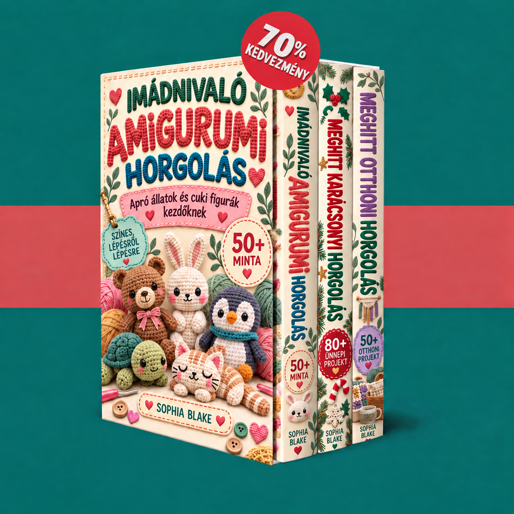

Üdvözlünk a gyűjteményedben! Fedezd fel a három könyvet, és kezdj kis állatokkal, karácsonyi díszekkel vagy otthonosságot teremtő projektekkel.

Könyvek betöltése…
A tagi felület használatához engedélyezd a JavaScriptet. A PDF-eket az alábbi hivatkozásokkal is megnyithatod.